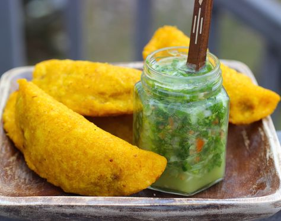

Empanadas Colombianas!

What are empanadas ?
Empanadas are very popular snacks in Colombia, they are found almost everywhere,
from cafes to restaurant, and even food stools. It is a fried pastry that contains filling
such as, potatoes, onions, peppers, chicken, beef, or pork. For this guide we will be
using chicken and beef. I also strongly recommend to serve them with
ají.
What rating would I give Empanadas Con Ají out of 10...easy...
Ingredients:
Masa(dough)
- Vegetable oil for frying
- Lime and ají for serving
- Dough or Masa
- 1 ½ cups precooked yellow cornmeal masarepa
- 2 cups water
- 1 tablespoon vegetable oil
- ½ tablespoon sazon Goya with azafran
- ½ teaspoon Salt
Filling
- 2 cups peeled and diced white potatoes
- 1 chicken or vegetable bouillon tablet
- 1 tablespoon olive oil
- ¼ cup chopped white onions
- 1 cup chopped tomato
- ½ teaspoon salt
- ¼ cup chopped green onions
- 1 chopped garlic clove
- 2 tablespoon chopped fresh cilantro
- 2 tablespoon chopped red bell pepper
- ¼ teaspoon black pepper
- ½ pound ground chicken and beef
Instructions:
- To prepare the dough:Place the masarepa in a large bowl. Add the sazon Goya and salt and stir to mix well. Add the water and oil and mix to form dough. Pat the dough into a ball and knead for 2 minutes or until smooth. Cover with plastic and set aside for 20 minutes.
- Meanwhile, to make the filling, cook the potatoes in a pot with water and the bouillon tablet for 20-25 minutes or until tender. Drain and gently mash the potatoes. Set aside.
- Heat 1 tablespoon olive oil in a large, heavy skillet. Add the onion and cook over medium-low heat stirring frequently, for 5 minutes. Add the tomatoes, green onions, garlic, bell pepper, cilantro, salt and black pepper. Cook for about 15 minutes
- Add the ground pork and beef. Cook, breaking up the meat with a wooden spoon, for 10 to 15 minutes or until the mixture is fairly dry
- Transfer the meat mixture to the mashed potatoes bowl and mix well to combine
- Break small portions of the dough, about 1 ½ tablespoons each one, and form each portion into a ball by rolling between the palms of your hands
- Place the balls of dough between two pieces of plastic and roll each out very thinly to form a circle. Remove the top plastic and place 1 tablespoon of the filling in the center of each
- Then using the plastic underneath, fold the dough over to enclose the filling, forming a half circle. Tightly seal the edges by crimping with the tines of a fork
- Fill a large pot with vegetable oil and heat over medium heat to 360° F
- Carefully place 3 or 4 empanadas at the time in the heated oil and fry for about 2 minutes until golden on all sides
- Using a slotted spoon transfer the empanadas to a plate lined with paper towels. Serve with ají and lime on the side